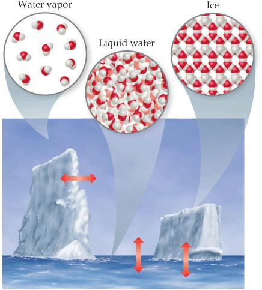
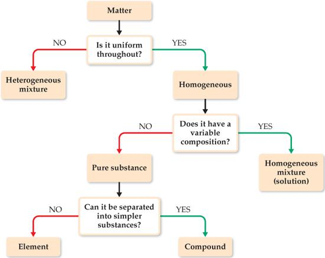
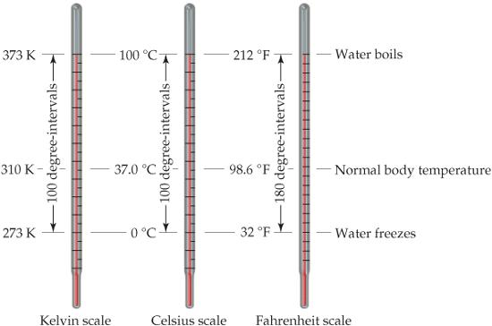
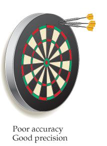

Capítulo 2 · La materia y su medición
El objeto de la química: materia y propiedades
Química es el estudio de la materia y de los cambios que esta experimenta, y por materia se entiende el material físico del universo: todo lo que tiene masa y ocupa espacio (Brown et al. 2012, cap. 1; Pauling 1988, cap. 1; Atkins 2015, cap. 1). Una propiedad es cualquier característica que permite reconocer un tipo particular de materia y distinguirlo de otros; este libro, el cuerpo que lo lee y el aire que lo rodea son muestras de materia (Brown et al. 2012, cap. 1).
Experimentos incontables han mostrado que la enorme variedad de materia del mundo se debe a combinaciones de solo alrededor de cien sustancias llamadas elementos, y que cada elemento está compuesto por una clase única de átomos, los bloques de construcción casi infinitesimales de la materia (Brown et al. 2012, cap. 1; Atkins 2015, cap. 1).
Las propiedades de la materia se relacionan tanto con las clases de átomos que contiene, su composición, como con la manera en que esos átomos se ordenan, su estructura (Brown et al. 2012, cap. 1). En las moléculas, dos o más átomos están unidos con formas específicas, y diferencias aparentemente menores de composición o estructura pueden causar diferencias profundas de propiedades (Brown et al. 2012, cap. 1).
El etanol, alcohol de las bebidas, y el etilenglicol, líquido viscoso usado como anticongelante, contienen los mismos elementos y difieren solo en un átomo de oxígeno, pero sus efectos biológicos son opuestos (Brown et al. 2012, cap. 1). La química piensa entonces en dos reinos: el macroscópico, de los objetos de tamaño ordinario, y el submicroscópico, de los átomos y moléculas; observamos en el primero y explicamos con el segundo (Brown et al. 2012, cap. 1; Atkins 2015, cap. 1).
Pauling, por su parte, define la química como la ciencia de las sustancias: su estructura, sus propiedades y las reacciones que las transforman en otras (Pauling 1988, cap. 1). El universo, en su visión, está compuesto de materia y de energía radiante; la materia es cualquier tipo de masa-energía que se mueve con velocidades menores que la de la luz, y la energía radiante la que se mueve a la velocidad de la luz (Pauling 1988, cap. 1).
Esta definición de Pauling es a la vez demasiado estrecha y demasiado amplia: estrecha porque el químico debe estudiar también la interacción de la luz con las sustancias, y amplia porque casi toda la ciencia cabe dentro de ella, desde la astrofísica hasta la geología (Pauling 1988, cap. 1).
Estados de la materia
Una muestra de materia puede ser gas, líquido o sólido, las tres formas o estados de la materia, que difieren en sus propiedades observables (Brown et al. 2012, cap. 1; Pauling 1988, cap. 1; Atkins 2015, cap. 1).{#sec-estados-materia} Un gas no tiene volumen ni forma fijos, se adapta al recipiente que lo contiene y puede comprimirse o expandirse; un líquido tiene volumen propio pero adopta la forma de la porción del recipiente que ocupa; un sólido tiene forma y volumen definidos (Brown et al. 2012, cap. 1). Ni líquidos ni sólidos pueden comprimirse en grado apreciable (Brown et al. 2012, cap. 1).
En el nivel molecular, un gas tiene moléculas muy separadas que se mueven a gran velocidad y chocan entre sí y contra las paredes del recipiente; comprimirlo reduce el espacio entre moléculas y aumenta la frecuencia de los choques sin alterar el tamaño de las moléculas (Brown et al. 2012, cap. 1). En un líquido, las moléculas están muy empaquetadas pero aún se mueven rápido, deslizándose unas sobre otras, lo que permite verterlo; en un sólido están sujetas con firmeza, usualmente en arreglos definidos, y solo pueden vibrar ligeramente (Brown et al. 2012, cap. 1).
Los cambios de temperatura o presión convierten un estado en otro: el hielo se funde, el vapor de agua se condensa y el líquido se congela, procesos que se llaman cambios de estado y que son reversibles (Brown et al. 2012, cap. 1). Cada sustancia los experimenta a temperaturas características que sirven para identificarla, como el punto de fusión del hielo a 0 °C (Brown et al. 2012, cap. 1). La figura Figura 3.1 resume esas interconversiones con las flechas que unen los tres estados (Brown et al. 2012, fig. 1.4).

Nota. Figura reproducida de (Brown et al. 2012, fig. 1.4), © Pearson Prentice Hall (2012), reutilizada con fines educativos de estudio propio.
Sustancias puras, elementos y compuestos
Una sustancia pura es materia con propiedades distintivas y composición que no varía de una muestra a otra; el agua y la sal común son ejemplos (Brown et al. 2012, cap. 1; Atkins 2015, cap. 1).{#sec-sustancias-puras-mezclas} Todas las sustancias son elementos o compuestos: los elementos no pueden descomponerse en sustancias más simples y cada uno contiene una sola clase de átomos; los compuestos están formados por dos o más elementos y contienen dos o más clases de átomos (Brown et al. 2012, cap. 1; Atkins 2015, cap. 1).
Se conocen hoy 118 elementos, aunque su abundancia varía enormemente: solo cinco, oxígeno, silicio, aluminio, hierro y calcio, suman más del 90 por ciento de la corteza terrestre, y solo tres, oxígeno, carbono e hidrógeno, más del 90 por ciento de la masa del cuerpo humano (Brown et al. 2012, cap. 1).
El agua pura, cualquiera que sea su origen, consiste en 11 por ciento de hidrógeno y 89 por ciento de oxígeno en masa, y esta constancia es la ley de la composición constante o ley de las proporciones definidas, enunciada por Joseph Louis Proust alrededor de 1800 (Brown et al. 2012, cap. 1; Pauling 1988, cap. 1; Atkins 2015, cap. 1).{#sec-ley-composicion-constante} Las propiedades del agua no se parecen a las de sus elementos: hidrógeno y oxígeno son gases inflamables o comburentes, mientras el agua los apaga, y cada sustancia es única porque sus moléculas son únicas (Brown et al. 2012, cap. 1).
Cuando dos materiales difieren en composición o propiedades, o son compuestos distintos o difieren en pureza; la química no ve diferencia entre el compuesto hecho en el laboratorio y el encontrado en la naturaleza, y el caso del agua lo confirma (Brown et al. 2012, cap. 1). La ley de la composición constante vale para ambos por igual, porque lo que define al compuesto es su composición fija, no su procedencia (Brown et al. 2012, cap. 1).
Mezclas y soluciones
La mayor parte de la materia que encontramos son mezclas, combinaciones de dos o más sustancias en las que cada una conserva su identidad química, y cuya composición puede variar (Brown et al. 2012, cap. 1; Atkins 2015, cap. 1). Las mezclas que no tienen la misma composición, propiedades y apariencia en todo punto son heterogéneas, como las rocas o la madera (Brown et al. 2012, cap. 1). El esquema de Figura 3.2 resume el recorrido: la materia es sustancia pura o mezcla, y la pura es elemento o compuesto (Brown et al. 2012, fig. 1.9).
Las mezclas que son uniformes en todo su volumen son homogéneas, y a las mezclas homogéneas se las llama soluciones (Brown et al. 2012, cap. 1; Atkins 2015, cap. 1). El aire es una solución gaseosa de nitrógeno, oxígeno y otros gases; el azúcar y la sal disueltos en agua forman soluciones líquidas; y también existen soluciones sólidas, como las aleaciones (Brown et al. 2012, cap. 1).
Pauling precisa el vocabulario de la mezcla con los conceptos de fase, constituyente y componente, definidos con precisión. Una fase es una parte homogénea de un sistema, separada de las otras por límites físicos: un frasco con agua, hielo flotando y aire contiene tres fases (Pauling 1988, cap. 1).
Los constituyentes de un sistema son sus fases, y un conjunto de componentes es el número mínimo de sustancias con las que podrían formarse todas las fases (Pauling 1988, cap. 1). Así, el sistema agua-hielo-aire tiene tres fases pero solo dos componentes, agua y aire, porque ambas fases acuosas pueden hacerse de una sola sustancia (Pauling 1988, cap. 1).
Las mezclas se separan aprovechando diferencias de propiedades: la filtración separa un sólido de un líquido haciéndolo pasar por papel de filtro; la destilación hierve la mezcla y condensa el vapor, separando según la capacidad de las sustancias para formar gases; la cromatografía usa la capacidad distinta de las sustancias para adherirse a superficies sólidas (Brown et al. 2012, cap. 1; Atkins 2015, cap. 1). Una mezcla heterogénea de limaduras de hierro y oro podría separarse con un imán o disolviendo el hierro en un ácido apropiado y luego filtrando (Brown et al. 2012, cap. 1).

Nota. Figura reproducida de (Brown et al. 2012, fig. 1.9), © Pearson Prentice Hall (2012), reutilizada con fines educativos de estudio propio.
Propiedades físicas y químicas; cambios
Las propiedades físicas pueden observarse sin cambiar la identidad y la composición de la sustancia: color, olor, densidad, puntos de fusión y ebullición y dureza (Brown et al. 2012, cap. 1; Atkins 2015, cap. 1).{#sec-propiedades-fisicas-quimicas} Las propiedades químicas describen cómo una sustancia puede reaccionar para formar otras; la inflamabilidad, la capacidad de arder en presencia de oxígeno, es un ejemplo clásico (Brown et al. 2012, cap. 1; Atkins 2015, cap. 1).
Algunas propiedades, como temperatura y punto de fusión, son intensivas, no dependen de la cantidad de muestra y sirven para identificar sustancias; la masa y el volumen son extensivas porque dependen de la cantidad presente (Brown et al. 2012, cap. 1; Pauling 1988, cap. 1; Atkins 2015, cap. 1).{#sec-propiedades-intensivas-extensivas} La misma sustancia, en cualquier porción que se tome, conserva sus propiedades intensivas (Brown et al. 2012, cap. 1).
Pauling llama a las propiedades intensivas propiedades intrínsecas, características de la sustancia que no se afectan por el tamaño de la muestra ni su estado de división: la densidad del cloruro de sodio es siempre 2,163 g/cm³ y su solubilidad a 18 °C, 35,86 g en 100 g de agua (Pauling 1988, cap. 1). Otras propiedades intrínsecas medibles son el punto de fusión, la conductividad eléctrica y térmica, y la maleabilidad y ductilidad, la facilidad para ser martillado en láminas o estirado en alambres (Pauling 1988, cap. 1).
El color también es una propiedad importante, y su apariencia depende del estado de subdivisión: el color se aclara al moler las partículas porque la luz penetra menos distancia antes de reflejarse (Pauling 1988, cap. 1). Por eso una misma sustancia pulverizada y en bloque puede parecer de colores distintos, y la observación debe decirlo junto al resto de las propiedades (Pauling 1988, cap. 1).
Durante un cambio físico, la sustancia altera su apariencia física pero no su composición; la evaporación del agua es un cambio físico, y todos los cambios de estado lo son (Brown et al. 2012, cap. 1). En un cambio químico o reacción química, la sustancia se transforma en otra químicamente distinta: cuando el hidrógeno arde se combina con el oxígeno y forma agua (Brown et al. 2012, cap. 1; Atkins 2015, cap. 1).
Algunas reacciones son dramáticas: el cobre sumergido en ácido nítrico produce una solución verde-azulada y un gas rojo pardusco, y el propio texto de Ira Remsen de 1901 recuerda cómo «el ácido nítrico actúa sobre los pantalones» (Brown et al. 2012, cap. 1). Las propiedades químicas, dice Pauling, son las que se relacionan con la participación en reacciones; el gusto y el olor están estrechamente correlacionados con la naturaleza química y se consideran propiedades químicas, pues los sentidos del olfato y del gusto son los sentidos químicos (Pauling 1988, cap. 1).
Unidades y el sistema internacional
Muchas propiedades de la materia son cuantitativas y exigen unidades: las científicas son las del sistema métrico, desarrollado en Francia a fines del siglo XVIII; en 1960 un acuerdo internacional fijó la elección métrica preferida para la ciencia, las unidades SI (del francés Système International d’Unités), con siete unidades base de las que derivan todas las demás (Brown et al. 2012, cap. 1; Atkins 2015, cap. 1).{#sec-unidades-si} Los prefijos indican fracciones decimales o múltiplos: mili significa 10⁻³, de modo que un miligramo es 10⁻³ gramos y un milímetro 10⁻³ metros (Brown et al. 2012, cap. 1).
La unidad base de longitud es el metro, algo más largo que una yarda; la de masa es el kilogramo, igual a unas 2,2 libras, y es inusual porque usa un prefijo sobre la palabra gramo, por lo que a las demás unidades de masa se les añaden prefijos al gramo (Brown et al. 2012, cap. 1). Pauling precisa las definiciones históricas: el kilogramo es la masa de un objeto patrón de aleación platino-iridio guardado en París, y una libra equivale aproximadamente a 453,59 g (Pauling 1988, cap. 1).
El metro se definió primero entre dos trazos de una barra patrón de platino-iridio y en 1960 como 1.650.763,73 longitudes de onda de la línea espectral rojo-anaranjada del criptón 86; el segundo es el intervalo de 9.192.631.770 ciclos de la línea de microondas del cesio 133 (Pauling 1988, cap. 1).
El volumen tiene como unidad SI el metro cúbico, m³; en química se usa mucho el litro, que equivale a 10⁻³ m³, y el mililitro es igual al centímetro cúbico: 1 mL = 1 cm³ (Pauling 1988, cap. 1). Así, un cubo de un centímetro de arista contiene exactamente un mililitro, sin importar la sustancia que lo llene (Pauling 1988, cap. 1).
El newton, N, es la fuerza que acelera 1 kg en 1 m/s², y el julio, J, es el trabajo realizado por 1 newton en 1 metro: 1 J = 1 N·m (Pauling 1988, cap. 1). La caloría termoquímica, definida como 4,184 J, es aproximadamente la energía necesaria para elevar 1 grado la temperatura de 1 gramo de agua, y la kilocaloría (kcal o Cal) son 10³ cal (Pauling 1988, cap. 1).
Energía, masa y temperatura
Para Pauling, la distinción clásica entre materia y energía se desdibujó en 1905, cuando Einstein señaló que la energía también tiene masa y que la luz es atraída por la gravedad, verificado al observar en un eclipse que un rayo de una estrella lejana se desvía al pasar junto al Sol (Pauling 1988, cap. 1). La cantidad de masa asociada a una cantidad definida de energía la da la ecuación de Einstein, parte esencial de la teoría de la relatividad (Pauling 1988, cap. 1; Atkins 2015, cap. 1):{#sec-ecuacion-einstein}
\[ E = m c^2 \tag{3.1}\]
En esta ecuación, E es la cantidad de energía en julios, m la masa en kilogramos y c la velocidad de la luz, 2,9979 × 10⁸ metros por segundo, una de las constantes fundamentales de la naturaleza (Pauling 1988, cap. 1). En las reacciones químicas ordinarias el cambio de masa es indetectable: al explotar 1 kg de nitroglicerina se liberan 8,0 × 10⁶ J, lo que equivale a una pérdida de masa de menos de una parte en diez mil millones (Pauling 1988, cap. 1).
La ecuación se verificó experimentalmente en procesos nucleares y unió las antiguas leyes de conservación de la materia y de la energía en una sola: la ley de conservación de la masa, en la que la masa conservada incluye tanto la de la materia como la de la energía radiante del sistema (Pauling 1988, cap. 1).
La temperatura es la cualidad que determina la dirección en que fluye la energía térmica: fluye del objeto a mayor temperatura al de menor (Pauling 1988, cap. 1; Brown et al. 2012, cap. 1). La escala científica es la Celsius o centígrada, introducida por Anders Celsius en 1742, con 0 °C en la congelación del agua saturada de aire y 100 °C en su ebullición a 1 atmósfera; la escala Fahrenheit de la vida cotidiana pone esos puntos en 32 °F y 212 °F (Pauling 1988, cap. 1).{#sec-escalas-temperatura}
La escala Kelvin, ideada por Lord Kelvin, parte del cero absoluto, −273,15 °C, la temperatura mínima posible, y se define de modo que el punto triple del agua, donde coexisten hielo, agua líquida y vapor, sea 273,16 K (Pauling 1988, cap. 1). Como no existe temperatura menor, la escala kelvin carece de valores negativos (Pauling 1988, cap. 1).

Nota. Figura reproducida de (Brown et al. 2012, fig. 1.17), © Pearson Prentice Hall (2012), reutilizada con fines educativos de estudio propio.
La figura Figura 3.3 yuxtapone las tres escalas y muestra cuánto se desplaza cada cero (Brown et al. 2012, fig. 1.17); las escalas Celsius y Kelvin tienen unidades del mismo tamaño, de modo que un kelvin equivale a un grado Celsius y la relación entre ambas es directa: la conversión se reduce a sumar o restar 273,15, porque solo el desplazamiento del cero separa las lecturas de las dos escalas, sin factor de escala que multiplicar (Brown et al. 2012, cap. 1):
\[ T_{\text{K}} = T_{\text{°C}} + 273{,}15 \tag{3.2}\]
Aquí, TK es la temperatura en kelvin y T°C la temperatura en grados Celsius; el cero absoluto, 0 K, corresponde a −273,15 °C (Brown et al. 2012, cap. 1). La conversión a Fahrenheit usa el hecho de que el grado Fahrenheit es 5/9 del grado centígrado y que 0 °C coincide con 32 °F (Brown et al. 2012, cap. 1):
\[ T_{\text{°F}} = \tfrac{9}{5}\,T_{\text{°C}} + 32 \tag{3.3}\]
En esta fórmula, T°F es la temperatura en grados Fahrenheit; nótese que no se usa el símbolo de grado con el kelvin (Brown et al. 2012, cap. 1). Un gas enfriado disminuye su volumen de manera regular, y extrapolando esa disminución se obtuvo el cero absoluto: si el volumen siguiera cayendo igual, se anularía cerca de −273 °C (Pauling 1988, cap. 1).
Densidad
La densidad es la cantidad de masa en una unidad de volumen de una sustancia, una propiedad intensiva que permite identificar materiales y cuya unidad habitual en química es el gramo por mililitro; en el agua vale 1,00 g/mL por la definición original del gramo (Brown et al. 2012, cap. 1; Pauling 1988, cap. 1; Atkins 2015, cap. 1):{#sec-densidad}
\[ d = \frac{m}{V} \tag{3.4}\]
En esta definición, d es la densidad, m la masa y V el volumen; las densidades de sólidos y líquidos se expresan comúnmente en gramos por centímetro cúbico o gramos por mililitro (Brown et al. 2012, cap. 1). No es casualidad que la densidad del agua sea 1,00 g/mL: el gramo se definió originalmente como la masa de 1 mL de agua a una temperatura específica (Brown et al. 2012, cap. 1).
Como la mayoría de las sustancias cambian de volumen al calentarse o enfriarse, la densidad depende de la temperatura y debe especificarse; si no se reporta, se asume 25 °C (Brown et al. 2012, cap. 1). Quien dice que el hierro pesa más que el aire quiere decir que tiene mayor densidad: 1 kg de aire tiene la misma masa que 1 kg de hierro, pero el hierro ocupa menos volumen (Brown et al. 2012, cap. 1).
Incertidumbre y cifras significativas
En el trabajo científico hay números exactos, cuyos valores se conocen con certeza, como los 12 huevos de una docena o los 2,54 cm de una pulgada, y números inexactos, que tienen alguna incertidumbre porque provienen de mediciones (Brown et al. 2012, cap. 1; Atkins 2015, cap. 1). Los equipos tienen limitaciones inherentes y las personas leen distinto, de modo que las mediciones repetidas varían ligeramente: siempre existen incertidumbres en las cantidades medidas (Brown et al. 2012, cap. 1).{#sec-cifras-significativas}
La precisión mide cuán de acuerdo están las mediciones individuales entre sí, y la exactitud cuán cerca está la medición del valor correcto o verdadero; la analogía de los dardos en la diana ilustra que un conjunto preciso puede ser inexacto si el instrumento está mal calibrado (Brown et al. 2012, cap. 1; Pauling 1988, cap. 1; Atkins 2015, cap. 1).{#sec-precision-exactitud} La figura Figura 3.4 traslada la analogía a la química: un conjunto de mediciones agrupadas y desplazadas es preciso pero inexacto (Brown et al. 2012, fig. 1.23).

Nota. Figura reproducida de (Brown et al. 2012, fig. 1.23), © Pearson Prentice Hall (2012), reutilizada con fines educativos de estudio propio.
Todas las cifras de una cantidad medida, incluida la incierta, son cifras significativas; una masa reportada como 2,2 g tiene dos y una de 2,2405 g tiene cinco, y cuantas más cifras se reportan, mayor es la certeza que implica la medición; el conteo de cifras comunica el grado de certeza con que se conoce el valor (Brown et al. 2012, cap. 1).
Las reglas para contarlas son tres: los ceros entre cifras no nulas son siempre significativos (1005 kg tiene cuatro); los ceros al principio nunca lo son, pues solo ubican el punto decimal (0,02 g tiene una); y los ceros al final son significativos si el número lleva punto decimal (0,0200 g tiene tres) (Brown et al. 2012, cap. 1; Atkins 2015, cap. 1).
Un número que termina en ceros sin punto decimal se asume sin esos ceros como cifras significativas, lo que vuelve ambigua la expresión 10000 g; la notación exponencial resuelve la ambigüedad: 1,03 × 10⁴ g tiene tres cifras significativas, mientras 1,0 × 10⁴ g tiene dos (Brown et al. 2012, cap. 1).
En los cálculos, la medición menos cierta limita la certeza del resultado. Para la suma y la resta, el resultado tiene tantos decimales como la medición con menos decimales; para la multiplicación y la división, tantas cifras significativas como la medición con menos cifras (Brown et al. 2012, cap. 1; Atkins 2015, cap. 1). El área de un rectángulo de 6,221 cm por 5,2 cm se reporta 32 cm², porque 5,2 tiene dos cifras significativas, y la suma 104,6 de números con una cifra decimal se reporta con una cifra decimal (Brown et al. 2012, cap. 1).
Los números exactos tienen infinitas cifras, y al redondear, si el dígito eliminado es menor que 5 el anterior se deja igual, y si es 5 o mayor se incrementa en 1: redondear 4,735 a tres cifras da 4,74 (Brown et al. 2012, cap. 1). Esta regla se aplica también tras cada operación del cálculo, no solo al reportar el resultado final (Brown et al. 2012, cap. 1).
Análisis dimensional
El análisis dimensional resuelve problemas multiplicando, dividiendo o cancelando unidades, lo que garantiza que las soluciones tengan las unidades correctas y ofrece una forma sistemática de revisar los errores (Brown et al. 2012, cap. 1; Atkins 2015, cap. 1).{#sec-analisis-dimensional} La clave es el uso correcto de los factores de conversión, fracciones cuyo numerador y denominador son la misma cantidad expresada en unidades distintas: como 2,54 cm = 1 pulgada, pueden escribirse dos factores, uno con centímetros arriba y otro con pulgadas arriba (Brown et al. 2012, cap. 1).
Como numerador y denominador son iguales, multiplicar por un factor de conversión equivale a multiplicar por 1 y no altera el valor intrínseco de la cantidad; si las unidades deseadas no se obtienen, hay un error que la inspección suele revelar (Brown et al. 2012, cap. 1). La práctica de estimar las respuestas con cifras redondeadas, el cálculo «de estadio», complementa el análisis dimensional para juzgar si una respuesta es razonable (Brown et al. 2012, cap. 1).
Ejemplo resuelto: la energía en las cataratas del Niágara
Cuánto se calienta el agua al caer es un problema clásico de conversión de energía potencial en energía térmica, planteado por Pauling y resuelto aquí con sus cifras (Pauling 1988, cap. 1). Las cataratas del Niágara (Horseshoe) tienen 160 pies de altura; la aceleración estándar de la gravedad es 9,80665 m/s² (Pauling 1988, cap. 1).
La fuerza gravitatoria sobre 1 kg en la superficie terrestre es 9,80665 N, y el cambio de energía potencial de 1 kg a una distancia vertical h en metros es 9,80665 × h julios (Pauling 1988, cap. 1). Multiplicando 0,3048 por 160 se obtiene h = 48,77 m, y el cambio de energía potencial produce 9,80665 × 48,77 = 478 J de energía térmica por kilogramo (Pauling 1988, cap. 1).
Como elevar 1 kg de agua un grado exige 1 kcal, es decir 4184 J, el aumento de temperatura es 478 dividido entre 4184, lo que da 0,114 °C (Pauling 1988, cap. 1). Este resultado ilustra la paradoja energética del Niágara: la caída es espectacular, pero el agua solo se calienta unas décimas de grado (Pauling 1988, cap. 1).
Preguntas y ejercicios
Los ejercicios que siguen están inspirados en la tipología de Brown et al. (2012) (cap. 1) y Pauling (1988) (cap. 1); los valores numéricos, los contextos y los escenarios planteados son originales de este libro, de modo que cada enunciado puede reescribirse, re-calcularse y verificarse sin recurrir al texto fuente, y todo solucionario explica el procedimiento paso a paso.
Distinga, con argumentos y ejemplos propios, entre propiedades físicas y químicas y entre propiedades intensivas y extensivas (Brown et al. 2012, cap. 1; Pauling 1988, cap. 1). Una aleación de cobre y zinc llamada latón tiene composición uniforme en toda la muestra, pero dos muestras de latón de distintos fabricantes difieren en la proporción de sus metales; clasifíquela usando el esquema de la materia (Brown et al. 2012, cap. 1). Un frasco cerrado contiene agua líquida, hielo flotando y aire; identifique sus fases, constituyentes y un conjunto de componentes (Pauling 1988, cap. 1).
Repita el análisis si el frasco contuviera una solución acuosa de sal y advierta qué cambia: la solución es una sola fase, porque el agua y la sal no se separan por límites físicos visibles en el frasco, mientras el aire sigue siendo otra fase distinta (Pauling 1988, cap. 1).
Convierta la temperatura de congelación del mercurio, −40 °C, a grados Fahrenheit, y explique por qué esta temperatura es un punto notable de coincidencia entre las escalas (Pauling 1988, cap. 1). Convierta también 25 °C a kelvin y a grados Fahrenheit, usando las ecuaciones del capítulo (Brown et al. 2012, cap. 1). Calcule la masa de 50,0 mL de mercurio si su densidad es 13,6 g/mL, y el volumen que ocuparían 65,0 g de metanol de densidad 0,791 g/mL (Brown et al. 2012, cap. 1).
Determine cuántas cifras significativas tienen las cantidades 0,05040 g; 1005 kg; 2,3 × 10⁴ cm; y 5000, y explique la regla aplicada en cada caso (Brown et al. 2012, cap. 1). Calcule el volumen de una caja de 15,5 cm de ancho, 27,3 cm de largo y 5,4 cm de alto y repórtelo con las cifras correctas (Brown et al. 2012, cap. 1). Convierta la masa de 115 libras a gramos con un factor de conversión y comente por qué las cifras del resultado dependen de las cifras del dato original (Brown et al. 2012, cap. 1).
Solucionario
Las propiedades físicas se observan sin cambiar la identidad de la sustancia (color, densidad, puntos de fusión), mientras las químicas describen cómo reacciona para formar otras sustancias (inflamabilidad, corrosión) (Brown et al. 2012, cap. 1). Las intensivas, como temperatura y punto de fusión, no dependen de la cantidad de muestra; las extensivas, como masa y volumen, sí dependen de la cantidad (Brown et al. 2012, cap. 1). El latón es uniforme en todo su volumen, luego es homogéneo, y como su composición varía entre muestras no es un compuesto: es una solución (mezcla homogénea) (Brown et al. 2012, cap. 1).
El sistema agua-hielo-aire tiene tres fases (hielo, agua líquida, aire) cuyos constituyentes son esas fases; un conjunto de componentes es agua y aire, pues ambas fases acuosas se forman con una sola sustancia (Pauling 1988, cap. 1). La solución de sal añade una fase única, la solución, con dos componentes, agua y sal (Pauling 1988, cap. 1).
Aplicando la fórmula de conversión, −40 °C se convierte en (−40 × 9/5) + 32 = −40 °F: las escalas coinciden en ese punto (Pauling 1988, cap. 1). Para 25 °C, la temperatura kelvin es 25 + 273,15 = 298,15 K, y la Fahrenheit (25 × 9/5) + 32 = 77 °F (Brown et al. 2012, cap. 1).
La masa del mercurio es 50,0 mL × 13,6 g/mL = 680 g, y el volumen del metanol, 65,0 g / 0,791 g/mL = 82,2 mL (Brown et al. 2012, cap. 1). Las cifras significativas son cuatro para 0,05040 g (los ceros internos y finales tras el punto cuentan), cuatro para 1005 kg (ceros internos), dos para 2,3 × 10⁴ cm (el factor exponencial no aporta) y una para 5000 (ceros finales sin punto decimal no cuentan) (Brown et al. 2012, cap. 1).
El volumen de la caja es 15,5 × 27,3 × 5,4 = 2285,01 cm³, que se redondea a dos cifras: 2,3 × 10³ cm³ (Brown et al. 2012, cap. 1). Finalmente, 115 lb × (453,6 g/1 lb) = 5,22 × 10⁴ g, con tres cifras porque el dato original tiene tres (Brown et al. 2012, cap. 1).
Resumen del capítulo
La química estudia la materia y sus cambios; clasifica las sustancias en elementos y compuestos, y las mezclas en homogéneas y heterogéneas, y describe sus propiedades físicas y químicas, intensivas y extensivas (Brown et al. 2012, cap. 1). La medición cuantitativa exige unidades SI, conocimiento de las escalas de temperatura y del concepto de densidad, y conciencia de la incertidumbre expresada en cifras significativas (Brown et al. 2012, cap. 1).
El análisis dimensional garantiza resultados con unidades correctas, y el método científico, desde la observación hasta la ley y la teoría, guía todo el proceso (Brown et al. 2012, cap. 1). La ecuación de Einstein recuerda que materia y energía son intercambiables, y que la masa se conserva en el sentido amplio de la relatividad (Pauling 1988, cap. 1). Estas herramientas fundacionales se aplicarán en todos los capítulos siguientes (Brown et al. 2012, cap. 1).